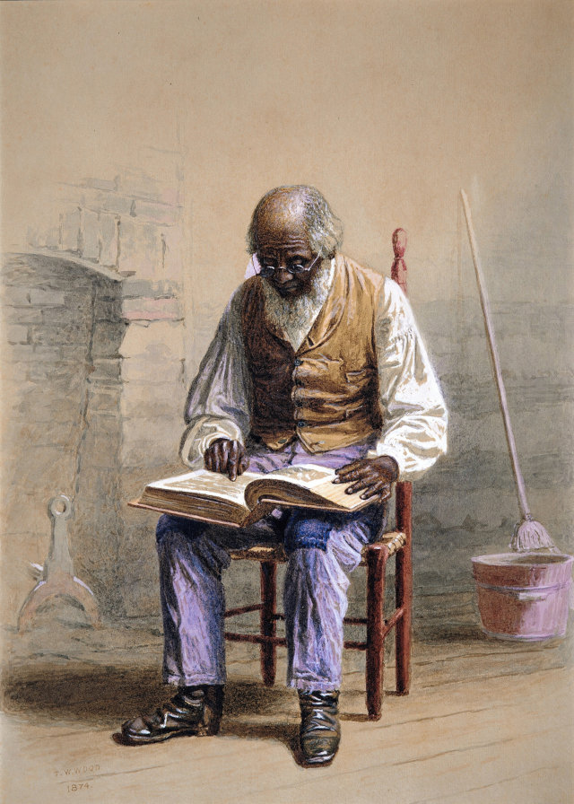

Litteratur  Determined: A Science of Life without Free Will Robert Sapolskys "Behave", hans numera klassiska redogörelse för varför människor gör gott och varför de gör ont, pekade mot en oroväckande slutsats: Vi kanske inte förstår den exakta sammansmältningen av natur och uppfostran som skapar fysiken och kemin i grunden för mänskligt beteende, men det betyder inte att den inte finns. Nu tar Sapolsky sitt argument hela vägen i "Determined", där han på ett briljant (och på sitt oefterhärmliga sätt, förtjusande) sätt gör ett fullskaligt angrepp på den behagliga fantasin att det finns ett separat jag som talar om för vår biologi vad den ska göra. Creating Capabilities - The Human Development Approach Detta är en introduktion till förmågeansatsen (The Capabilities Approach), Nussbaums innovativa modell för att bedöma mänsklig utveckling. Hon håller fram att mycket av dagens humanitära politik bryter mot grundläggande mänskliga värderingar; istället erbjuder hon ett unikt sätt att omdirigera regerings- och utvecklingspolitik mot att hjälpa var och en av oss att leva ett fullödigt och kreativt liv.